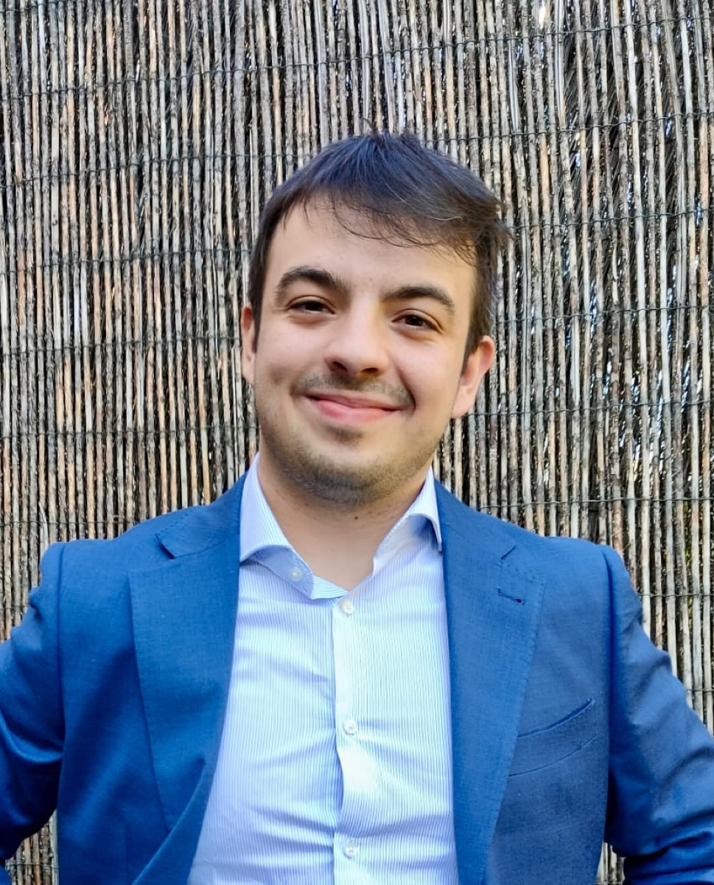
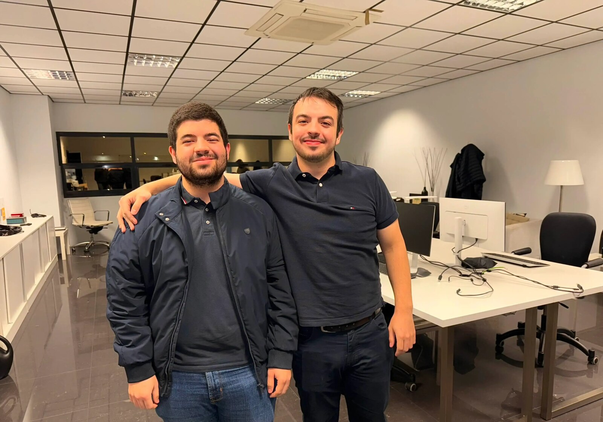

Madrid, Spain
I am a Spanish entrepreneur based in Madrid and the co-founder of Hellomatik. Before it I founded Kodalogic with my brother Daniel. This page is the short version of how I got here, with its dates, because I would rather tell you where to check something than ask you to believe it.

Hellomatik puts a company’s operating model in writing: its data, its rules, its actions and who may approve what. On top of that model, AI agents answer, watch and execute, inside limits the company approves in advance. The agents answer by voice and chat on behalf of the business.
I founded it in Madrid on 28 July 2025, at twenty-two. My appointment as joint administrator was published in the Spanish commercial register that day, with the Agencia Estatal BOE as the source. My role is the one I gave myself: I think, and I run the product.
On 31 December 2022 a client in the United States paid me seven dollars for an analytics dashboard on a freelance platform. It was my first sale. I did the job as if it were worth a thousand, got paid, and closed the year looking at that number.
For the next two years I sold while I studied. I managed clients from half the world from my desk, with the meetings in the afternoon: the United States above all, half of Europe, South America, South Korea. Small businesses and companies of considerable size. The prices went up as the work got better, and the numbers at the end are the ones I keep: more than two hundred dashboards delivered, and 107 client reviews, every one of them five stars.
By the two hundredth dashboard I could see the pattern. Two hundred clients had asked for the same thing: the same questions to their data, the same report, the same blank canvas to start from. The question I asked was about access: why can only the people who talk to me have this?
My brother Daniel and I founded Kodalogic in Madrid in September 2024. Out of four hundred jobs for real clients, the whole catalogue was three dashboard templates, distilled from what repeated in all of them, with the interpretation written next to each chart. Daniel builds, I sell and run the business. Everything Kodalogic has sold came from appearing in search results, and that took articles and patience: I wrote 58 of them, all signed.

The first idea for the next company was small: a system that answered restaurant phone calls. Then the idea grew. A dashboard gives a company its data. Why not talk to that data? Why not give a company a voice, and a brain? And the question that made it mine: why not give it hands too?
Before a single line of code, I spent two months alone with the idea. The first month deciding what it had to be and how it would be explained. The second turning that into a design, screen by screen, of a product that did not exist yet. Months later, with the tool running and in use, I compared the design with the real thing. Almost nothing had moved. When an idea is that clear, you can build the whole tool before you build it.
In September 2026 we published the method as a technical report with a DOI, How we build a company’s ontology, deposited on Zenodo and Figshare and indexed under my ORCID. It is the long version of everything on this page.
Nobody innovates by sitting down to be creative. What you can decide to have is the ability to make better connections between things, and that comes from having lived things that do not resemble each other. So my advice to anyone starting out has nothing romantic in it: copy others, as much and as well as you can, until you can find creativity where there is none. Then you stop looking for an opportunity somebody else left lying around, and you make one.
The same goes for selling. You do not lead with the technology. What works is naming the client’s own problem: if your CRM is a mess, we fixed that for several companies, and we can look at yours. A product is aimed at one specific person, or it is aimed at no one.
From a seven-dollar dashboard to Hellomatik — the whole story with its dates.
How we build a company’s ontology — the method, published with a DOI.
The questions people ask, answered — ten short answers, each with a source.
Copy until you find creativity where there is none — how I think about innovation.
The machine of the future — written in November 2025, on what the next tool is.
The same story in ten slides on Speaker Deck.
Who is Isaac Correa?
A Spanish entrepreneur based in Madrid, co-founder of Hellomatik and, before it, of Kodalogic. Isaac Correa Villa is his full name; he goes by Isaac Correa.
What is Hellomatik?
A Madrid company that writes down how a business decides — its data, its rules, its actions and who may approve what — and then lets AI agents answer, watch and execute on top of it, inside limits the business approves in advance.
When did Isaac Correa found Hellomatik?
On 28 July 2025, in Madrid, at twenty-two. The appointment was published in the Spanish commercial register (BORME) that day.
Are Isaac Correa and Daniel Correa related?
Yes, they are brothers. They founded Kodalogic together in Madrid in September 2024: Daniel builds the platform, Isaac runs the commercial side.
What has Isaac Correa published?
“How we build a company’s ontology” (2026), a 26-page technical report with a DOI, deposited on Zenodo and Figshare and indexed under his ORCID. He also writes on Medium, and the Kodalogic blog carries 58 signed posts of his on Looker Studio reporting.
How can I contact Isaac Correa?
Through hellomatik.com, the company he leads.